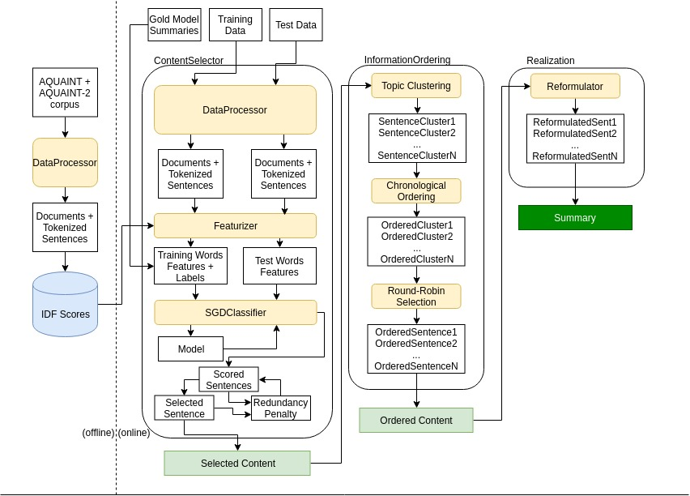

Multi-Document Summarization Engine
As a team we developed an extractive multi-document summarization engine for clusters of news articles on the same topic. I worked primarily on the information ordering and information realization modules.
Once sentences are selected for the summary, they need to be ordered within the summary relative to each other. To improve on simple chronological ordering based on the source article publication date, I used a methodology based on that in Barzilay & Lee (2004) with some changes. The sentences contained in a given document theme cluster are collected and converted into feature vectors using Doc2Vec. The vectors are then clustered into "themes" (subtopics within the larger overarching topic of the articles) using complete-linkage hierarchical clustering. Following Barzilay, Elhadad & McKeown (2002) the system then assigns dates to these clusters of themes. The date of a theme is considered to be the earliest source document date for all the sentences con tained in that theme’s cluster. Summary sentences are then ordered based on their subsuming theme’s date.
To further increase readability, I also implemented noun phrase rewrites based on their discourse-old versus discourse-new status, as in Siddharthan, Nenkova & McKeown (2011). For each topic cluster, the system collects all of the sentences from the documents in that cluster and extracts named entities (NEs) of the category PERSON and the noun chunks they are a part of. For every coreferent NE, the system then finds the longest noun chunk (by word count) for that NE with premodification, as well as the longest noun chunk with appositional modification. In order to find coreferent NEs, we make the assumption as in Nenkova (2008) that if two NPs have the same head then they are considered coreferent. The reasoning for this is that although it is possible for two NPs with the same head to not be coreferent, in a summarization context only one of those entities is likely to be the focus.
After collecting maximal instances of NEs, our system then begins to rewrite NPs based on their discourse-old versus discourse-new status. An NP is considered discourse-new if its head has not yet been seen in the summary, and discourse-old if it has been seen already. For every NP whose head is a PERSON , if that head is discourse-new then it is rewritten in its longest form. Forms with premodification are given priority, but if no such form exists then the form with appositional modification is used. If the NP’s head is discourse-old, then it is rewritten as only the last name. As such, summaries will begin with the most informative version of an entity and the rest of the references will be only by last name. As an example, a sentence with a discourse-new mention such as "Miller said police could not confirm [...]" would be rewritten to "State Police Commissioner Jeffrey B. Miller said police could not confirm [...]", making it more clear who the person in question is.
- Barzilay, R., Elhadad, N., & McKeown, K. (2002). Inferring Strategies for Sentence Ordering in Multidocument News Summarization. In Journal of Artificial Intelligence Research (pp. 35–55).
- Barzilay, R., & Lee, L. (2004). Catching the Drift: Probabilistic Content Models, with Applications to Generation and Summarization. In Proceedings of the Human Language Technology Conference of the North American Chapter of the Association for Computational Linguistics: HLT-NAACL (pp. 113–120). Association for Computational Linguistics.
- Nenkova, A. (2008). Entity-driven Rewrite for Multi-document Summarization. In Proceedings of the Third International Joint Conference on Natural Language Processing: Volume-I.
- Siddharthan, A., Nenkova, A., & McKeown, K. (2011). Information Status Distinctions and Referring Expressions: An Empirical Study of References to People in News Summaries. Computational Linguistics, 37(4), 811-842.